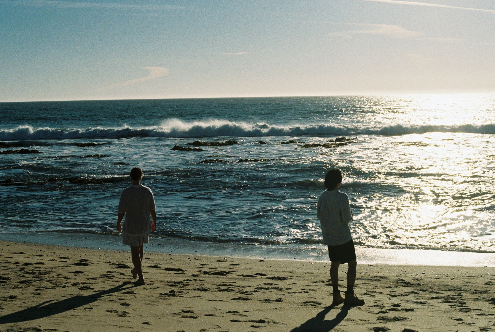
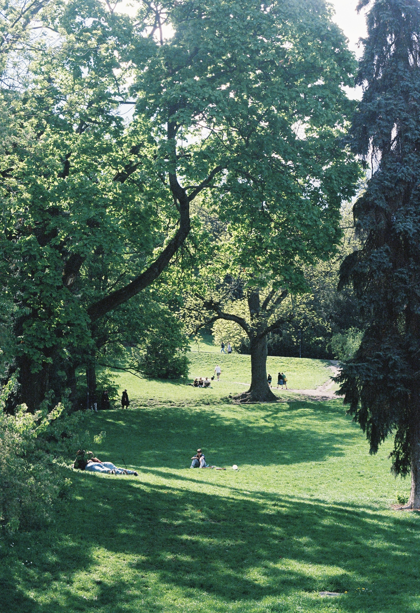
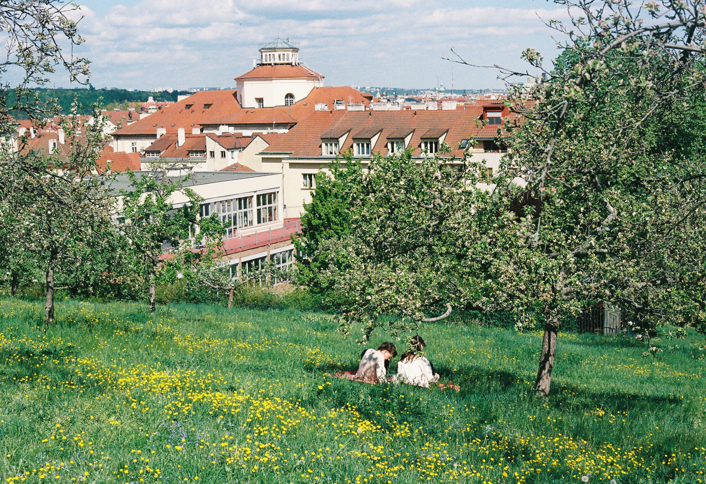
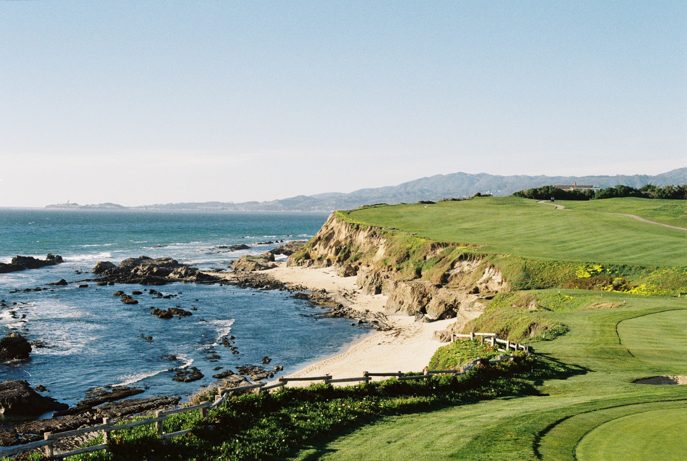
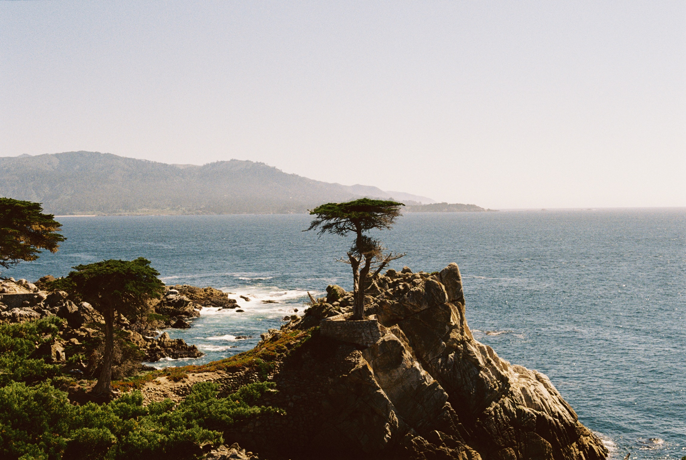
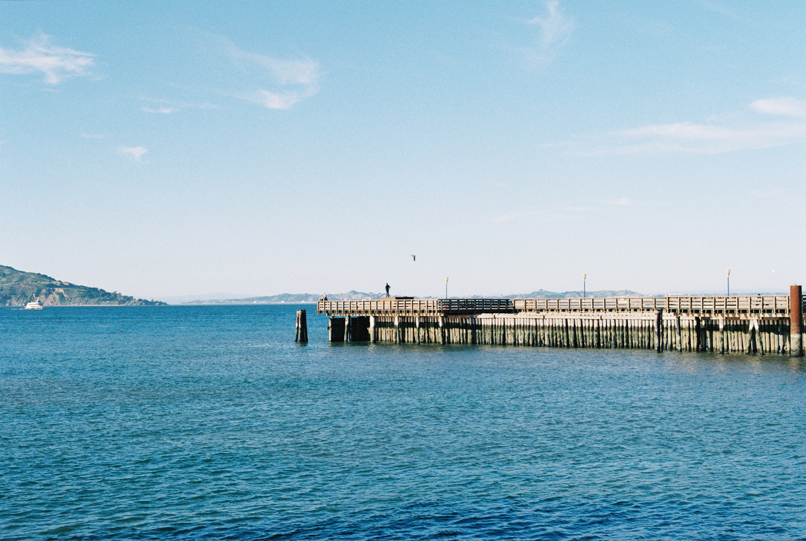
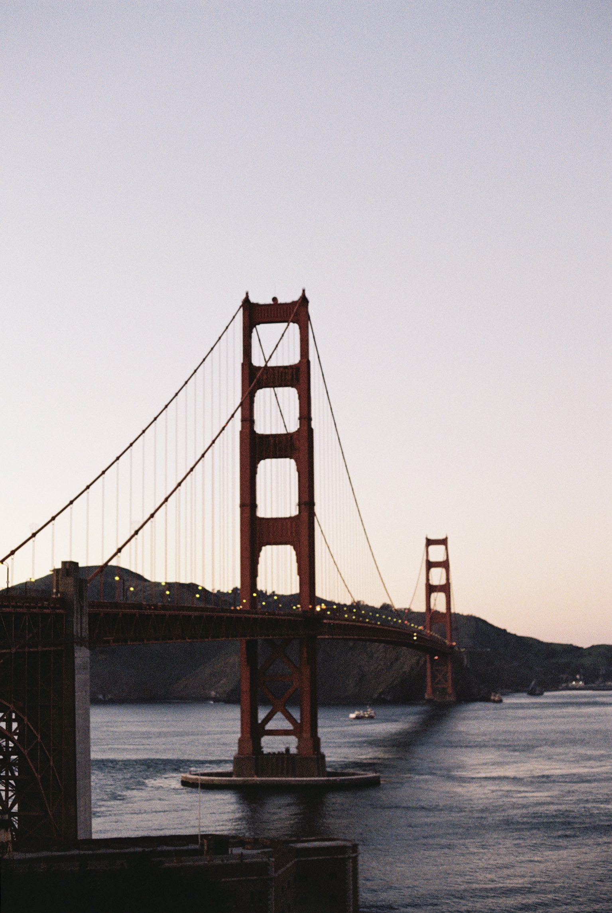
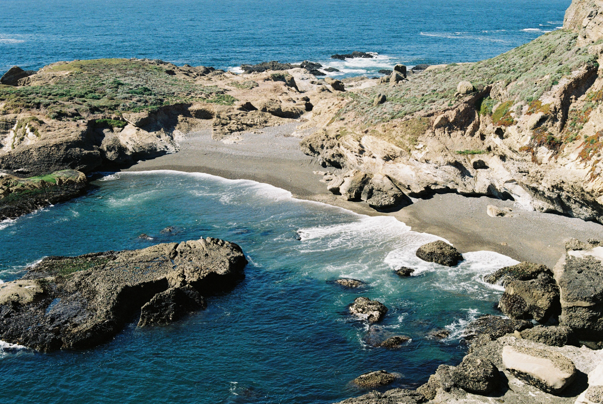
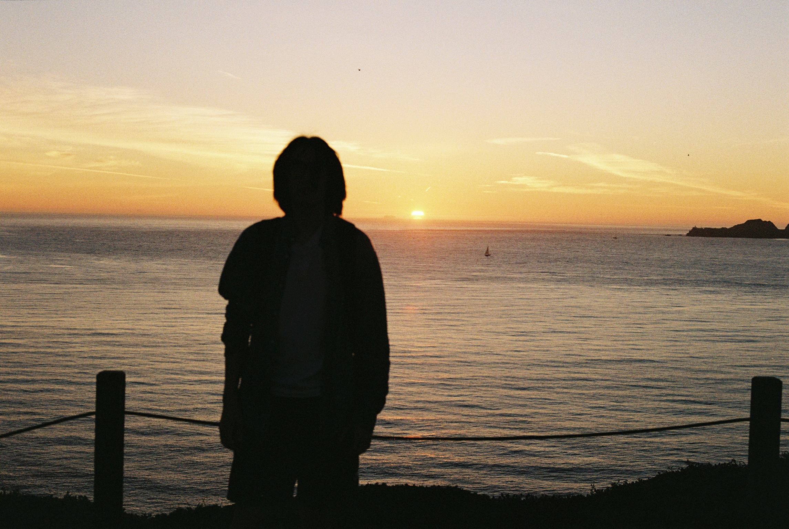
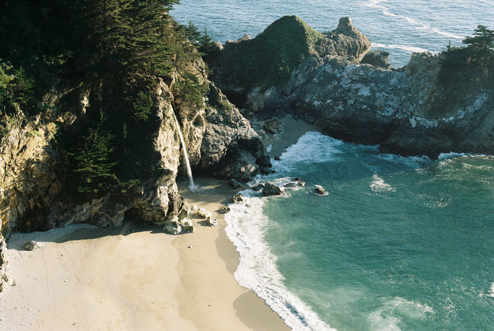

Project 05
Travel
Cities, distance, and the emotional texture of being elsewhere. This series looks at travel not as destination, but as atmosphere, memory, and movement through unfamiliar spaces.









